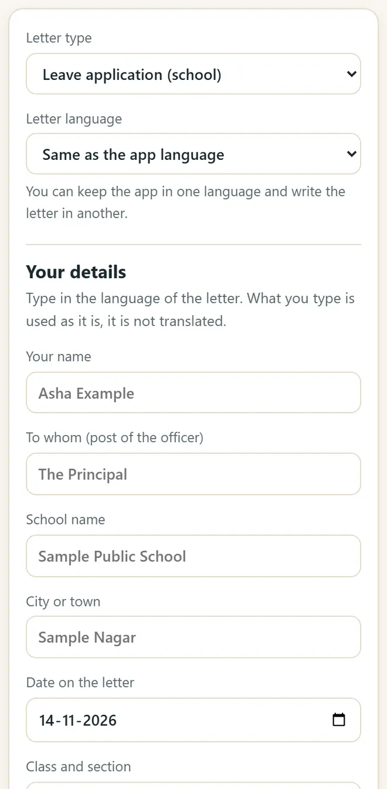

چھٹی کی درخواست کا فارمیٹ: اسکول، دفتر اور بیماری کی چھٹی
چھٹی کی درخواست کا ایک طے شدہ ڈھانچہ ہوتا ہے: کسے لکھنی ہے، مضمون، تاریخیں، وجہ اور آپ کا نام۔ یہ مفت ایپ ان حصوں کو اردو، ہندی، انگریزی یا 12 میں سے کسی بھی زبان میں صحیح ترتیب سے لگا دیتی ہے۔ آپ کو بس اپنی معلومات لکھنی ہے۔
مختصر جواب
درخواست اور خط نویس کھولیں اور “خط کی قسم” میں سے چنیں: “چھٹی کی درخواست (اسکول)”، “چھٹی کی درخواست (کالج)”، “چھٹی کی درخواست (دفتر)” یا “بیماری کی چھٹی”۔ اپنا نام، اسکول یا دفتر کا نام، تاریخیں اور چند لفظوں میں وجہ لکھیں۔ خط ایک بار پڑھیں، پھر “کاپی کریں” یا “پرنٹ کریں یا PDF محفوظ کریں” دبائیں۔
5 قدم میں چھٹی کی درخواست
-
چھٹی کی قسم چنیں
درخواست اور خط نویس کھولیں۔ یہ فرضی معلومات والے ایک نمونہ خط کے ساتھ کھلتی ہے، تاکہ آپ فارمیٹ دیکھ سکیں۔ “خط کی قسم” میں “چھٹی کی درخواست (اسکول)”، “چھٹی کی درخواست (کالج)”، “چھٹی کی درخواست (دفتر)” یا “بیماری کی چھٹی” چنیں۔ پھر فارم میں وہی معلومات دکھائی دیتی ہے جو اس خط کے لیے چاہیے۔

خط کی قسم چنیں اور تھوڑی سی معلومات بھریں۔ -
خط کی زبان چنیں
“خط کی زبان” میں اردو، ہندی، انگریزی یا 12 میں سے کوئی بھی زبان چنیں۔ ایپ آپ کی اپنی زبان میں ہی رہ سکتی ہے۔ اپنی معلومات خط کی زبان میں لکھیں: آپ جو لکھتے ہیں وہ ویسا ہی استعمال ہوتا ہے، اس کا ترجمہ نہیں ہوتا۔
-
اپنی معلومات بھریں
اپنا نام، جنہیں خط لکھنا ہے ان کا عہدہ (جیسے پرنسپل یا منیجر)، اسکول یا دفتر کا نام اور اپنا شہر لکھیں۔ طلبہ اپنی جماعت اور رول نمبر لکھیں، اور ملازمین اپنا عہدہ۔
-
تاریخیں اور وجہ لکھیں
“چھٹی کب سے” اور “چھٹی کب تک” میں تاریخیں چنیں: خط دن خود گن لیتا ہے۔ وجہ چند آسان لفظوں میں لکھیں، جیسے بخار یا بہن کی شادی۔ وہ جملے میں خود بیٹھ جاتی ہے۔ وجہ ہمیشہ سچی لکھیں۔
-
پڑھیں، پھر کاپی یا پرنٹ کریں
خط ایک بار پڑھ لیں۔ “کاپی کریں” دبا کر اسے WhatsApp یا ای میل میں پیسٹ کریں؛ وہاں آپ کوئی بھی لفظ بدل سکتے ہیں۔ کاغذ پر یا PDF میں چاہیے تو “پرنٹ کریں یا PDF محفوظ کریں” دبائیں (پرنٹ ونڈو میں Save as PDF چنیں)، اور ٹیکسٹ فائل کے لیے “ٹیکسٹ فائل ڈاؤن لوڈ کریں”۔

تیار درخواست، کاپی یا پرنٹ کرنے کے لیے۔
اچھی درخواست میں کیا ہوتا ہے
- اس کے حصے: کسے لکھی گئی ہے، تاریخ، مضمون، القاب، تاریخوں کے ساتھ وجہ، شکریے کی ایک سطر، اور آپ کا نام، ساتھ میں جماعت اور رول نمبر یا آپ کا عہدہ۔
- درخواست مختصر رکھیں۔ دو چھوٹے پیراگراف کافی ہیں: چھٹی کیوں چاہیے، کن تاریخوں کے لیے، اور ادب سے گزارش۔
- خط میں ________ جیسی لکیر کا مطلب ہے کہ وہ معلومات خالی ہے۔ اسے فارم میں بھریں، یا خط پرنٹ کر کے قلم سے لکھ دیں۔ چاہیں تو اپنا موبائل نمبر بھی شامل کر سکتے ہیں۔
- چھٹی کے اصول ہر اسکول اور دفتر میں الگ ہوتے ہیں۔ کہیں والدین کے دستخط چاہییں، کہیں ڈاکٹر کا سرٹیفکیٹ۔ اس لیے اپنے کلاس ٹیچر یا دفتر سے پوچھ لیں کہ انہیں کیا چاہیے۔
نئے مفت ٹولز اور ہندی میں AI کے اسباق پائیں
ہماری ای میل فہرست میں شامل ہوں: نئی مفت ایپس، نئی گائیڈز اور AI پر ہندی ویڈیو اسباق کی خبر آپ کو ملتی رہے گی۔ کوئی اسپام نہیں۔
صرف بالغوں (18+) کے لیے۔ آپ کبھی بھی اپنا نام ہٹوا سکتے ہیں۔
ہم یہ ٹولز کیوں تجویز کرتے ہیں
- سب کے لیے مفت: نہ اشتہار، نہ سائن اپ، نہ کوئی پیڈ پلان۔
- نجی: آپ کی فائلیں اور معلومات آپ کے اپنے آلے پر ہی رہتی ہیں۔
- فون، لیپ ٹاپ یا اسمارٹ بورڈ پر چلتے ہیں، اور ایک بار کھلنے کے بعد انٹرنیٹ کے بغیر بھی۔
- اردو اور ہندی سمیت 12 زبانوں میں۔
ویڈیو سے سیکھنا پسند ہے؟ ہمارے YouTube چینل پر AI اور مفت ٹولز کے ہندی اسباق دیکھیں۔
اکثر پوچھے جانے والے سوالات
اسکول کے لیے چھٹی کی درخواست کیسے لکھیں؟
درخواست پرنسپل یا کلاس ٹیچر کے نام لکھیں، مضمون لکھیں، ایک دو جملوں میں وجہ اور تاریخیں بتائیں، اور آخر میں اپنا نام، جماعت اور رول نمبر لکھیں۔ ایپ میں “چھٹی کی درخواست (اسکول)” چنیں اور یہی معلومات بھر دیں۔
کیا چھٹی کی درخواست ہندی میں مل سکتی ہے؟
جی ہاں۔ “خط کی زبان” میں ہندی چنیں اور اپنی معلومات ہندی میں لکھیں۔ خط اردو، انگریزی، بنگالی، مراٹھی، گجراتی، پنجابی، اڑیہ، تمل، تیلگو، کنڑ اور ملیالم میں بھی تیار ملتا ہے۔
بیماری کی چھٹی کی درخواست کیسے لکھیں؟
“بیماری کی چھٹی” چنیں، بیماری ایک دو لفظوں میں لکھیں، جیسے بخار، اور تاریخیں چنیں۔ خط میں لکھا آتا ہے کہ آپ کی طبیعت ٹھیک نہیں اور ان دنوں کی چھٹی چاہیے۔ بیمار طالب علم کے لیے “چھٹی کی درخواست (اسکول)” چنیں اور وجہ میں بیماری لکھیں۔
کیا درخواست WhatsApp یا ای میل پر بھیج سکتے ہیں؟
جی ہاں۔ “کاپی کریں” دبائیں اور خط WhatsApp یا ای میل میں پیسٹ کر دیں۔ اگر اسکول یا دفتر کو کاغذ پر چاہیے، تو “پرنٹ کریں یا PDF محفوظ کریں” دبائیں اور ہاتھ سے دستخط کریں۔
کیا یہ مفت ہے؟ کیا میری معلومات کہیں محفوظ ہوتی ہے؟
یہ مفت ہے اور سائن اپ نہیں چاہیے۔ آپ کی معلومات اسی براؤزر میں، آپ کے اپنے آلے پر رہتی ہے؛ کچھ بھی اپ لوڈ نہیں ہوتا۔ “میری معلومات مٹائیں” سے وہ ہٹ جاتی ہے۔
کام کی لگی؟
کسی دوست، ساتھیوں یا اپنے اسکول کے WhatsApp گروپ میں بھیجیں۔